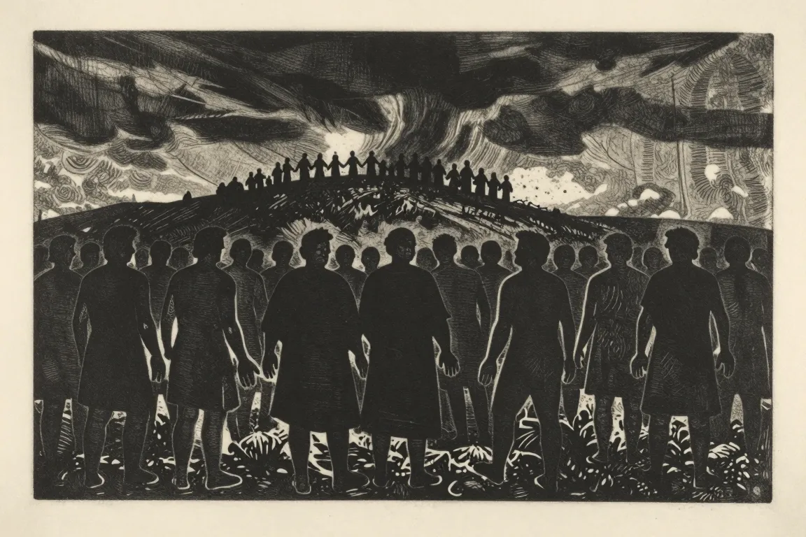

En nål av stål eller diamant skraper platen og skyver opp en grat av metall langs hver fure. Graten holder farge og trykker som en myk, fløyelsaktig sort linje som slites ned etter noen titalls avtrykk.

Kjerneidé
En nål som skraper bart kobber kaster opp en grat. Graten trykker som en myk sort linje som ingen syre og ingen gravstikke kan lage.
Designprinsipper
Tegn rett på den bare platen med en hard nål; ingen grunn og ingen syre.
Behold graten: ikke skrap den bort, for den holder fargen og gir den fløyelsaktige kanten.
Tegn de mørkeste partiene med tette, nesten parallelle linjer, og hold de lyse partiene åpne.
Tørk platen med en tynn film av farge igjen i feltet, til en platetone.
Regn med at linjen tynnes etter 20 til 50 avtrykk, og nummerer opplaget etter det.
Kombiner med etsing bare når det også trengs en fast linje; bruk gratlinjene til skyggene.